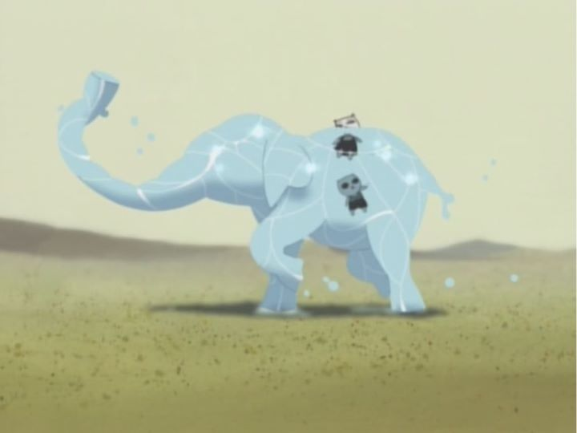

Chances are, you have never heard of the 2001 film "Cat Soup." The only reason I had ever learned about it was by looking up the filmography of Masaaki Yuasa, who did not serve as director here, but as animation director and co-writer. The actual director, Tatsuo Sato, spoke in interviews about the collaboration process and generally giving Yuasa a lot of credit here. Anyway, the film actually did receive a proper DVD release in North America once upon a time, by Central Park Media. Long out of print, I was impressed with myself when I found a used copy for under $60 at a local anime convention. At almost $2 a minute, it's one of the more expensive purchases I've made for my collection.After seeing the film, I also learned that the characters are directly based off a famous manga series by artist "Nekojiru," a nickname that also loosely translates to the phrase "Cat Soup." Her work features iconic cartoon cats with big eyes and cute little mouths, and from what I can gather without having read the comics (being a niche artist with a cult following, the comics seem to be long out of print, or else, possibly were never in print in English), feature these cats in human clothing living human lives, with all the complexity of cruelty, longing, and occasionally drugs. Sadly, Nekojiru committed suicide in 1998, less than a decade after her debut as a manga artist, and what might have been a successful commercialization of her work was mostly dropped. The short film "Cat Soup" is partially a tribute to her legacy, in addition to being a standalone indie short by an artist.I can't say for certain that you will enjoy "Cat Soup." It is, first and foremost, experimental, and that can be incredibly divisive... ah, never mind. "Cat Soup" is awesome.The film primarily stars two cats, younger brother Nyako and older sister Nyatta. The opening sequence shows us Nyako playing with a toy boat in a bathtub, and accidently drowning. Nyatta, in the other room, is sick and about to die: Nyako's soul happens to see Nyatta being led away by an unknown being, follows them and grabs her back. Without batting an eye, their father sees Nyako still head-first in the tub, takes him out and they stand next to Nyatta's body, as a cat doctor declares her most certainly dead. With a soul blob still in his hand, Nyako shoves it into Nyatta, and she instantly revives. "Oh." says the doctor. This all occurs only in the first few minutes of the short, but should give a hint about the type of film this will be. Nyako's actual state is intentionally left vague: is he really dead, after spending several minutes under water, and this is all just a bizarre dream? Or did he really survive and save his sister (the father's lack of surprise to see Nyako face-first in the tub suggests this might be a common occurance). The director claims there is no right answer, although the final scene is very suggestive. Anyway, even after being revived, Nyatta doesn't seem quite right: her eyes are glazed over, and she barely shows any emotion or personality. Nyako's yanking of her soul accidently split it, and the rest of the film is a random journey through a series of events while the two search for the missing piece (a second viewing helps a lot in the case, to make it clear they are looking for a flower). The quest doesn't appear all that urgent, and at times is so bizarre that it couldn't possibly be real. Starting from a trip to a circus, they come across a God performing miracles for entertainment, get lost at sea, get lost in a desert, and even come across Father Time, who seems preoccupied with retrieving his lunch to realize he is bending the fabric of space-time.Basically, there isn't a story. There is a beginning and an end, but they only serve as excuses to allow strange segments to be displayed on screen, one after the other. I didn't mind this at all. The individual vignettes are fascinating in the themes or black comedy they present, and the experience as a whole is fascinating enough to encourage rewatching. I don't think the artists had any particular intentions as to what the viewer would take away, but it doesn't stop one from wanting to understand it.  By the way, while the cats seem cute and innocent, they can be horrid brats at times. "Cat Soup" is absolutely not a film for children: there are multiple instances of murder, dismemberment, cannibalism and generally-gross humor. One sequence features the two cats lost at sea with a big, just as intelligent as they are. Instead of fishing, Nyako proceeds to carefully cut part of the pig's stomach out and fry it as bacon, to serve all three of them, much to the pig's amazement. This isn't the last of the pig's body being taken advantage of. Another scene features a Hansel-and-Gretel-esque moment when the two cats are welcomed to a buffet of food (the greedy and hungry Nyako can't resist), shortly before being given a bath in a pot of hot water... where the old man in question dons sexual-festish gear before attempting to finish his meal. The pacing and themes were largely artistic license, but apparently, much of the imagery came directly from the original comics! Depending on your personal preferences, you might be outright disgusted by the display. If you are at all like me, you will be giddy with laughter.The visuals, like the manga, are distinct, and don't realy look like any anime you've seen before, to the point where this qualifies much more as a independent animation rather than anime (J.C. Staff was the production studio involved, who otherwise work only on commercial anime television). Masaki Yuasa's early influence can be seen here in full force: there are some moments of generous camera movement through the world, or otherwise unusual camera angles. The human and animal characters have that unsual style Yuasa became known for in his later feature "Mind Game," with unusual-looking faces and sharp mouths. The world uses a lot of straight lines, but at unrestricted angles, creating the entirely unusual and uncompromised flavor I expect from the animator. By comparison, the music feels like an after-thought. It probably was an after-thought, but it might have been nice to see some more care taken to it here. And it's hard to judge the acting, because there isn't any: all dialogue is delivered through speech-bubbles (carefully overwritten for the English-subtitled version) and sound effects.The world of short films in animation is a difficult one to be passionate about. Most are made with little to no production values, can be difficult to find, and are more likely to be subject to the whims of the director involved, for better and for worse. But this also means there are some things that can only be seen through this type of medium, unrestrained by any hope of commercial success or returns. "Cat Soup" might have some pacing problems, being a bit slow and lacking a clear direction for its story to take, but it is one of the most visually inventive things I've seen. If you are already a fan of Masaki Yuasa, it is absolutely worth seeking out as one of the early steps for him to become a director in his own right. Meanwhile, I'll be looking for anything I can find by manga artist Nekojiru. Not having many DVD titles by Central Park Media, the trailers on the disk also revealed a couple interesting titles I wasn't aware of. Isn't it nice when art leads you astray?
- "Ani" More reviews can be found at : https://2danicritic.github.io/ Previous review: review_Cat_Planet_Cuties Next review: review_Chico_and_Rita